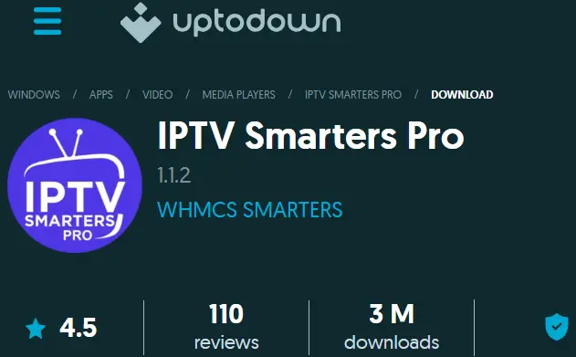
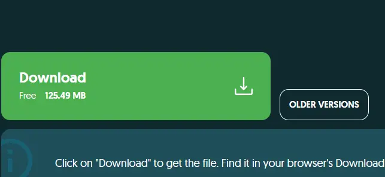

How to Download & Install IPTV Smarters on Windows PC
IPTV Smarters for Windows is a powerful media player that lets you stream live TV, movies, and series directly on your Windows PC or laptop using your 8kIPTV4U credentials. This comprehensive guide explains how to download, install, and set up IPTV Smarters safely and easily with step-by-step instructions.
System Requirements for Windows
- Operating System: Windows 7 or higher (Windows 10/11 recommended for best performance)
- RAM: Minimum 2GB (4GB recommended for smooth streaming without buffering)
- Storage: At least 500MB free disk space for installation
- Internet: Stable broadband connection (5+ Mbps recommended for HD streaming)
- Administrator Access: Required to run the installer
Step 1: Visit the Official IPTV Smarters Website
To ensure security and avoid malware, always download IPTV Smarters from the official website. Open your web browser and navigate to the official IPTV Smarters download page. Avoid third-party download sites and torrent sources.
Step 2: Download the Windows Version
Find the Windows section on the official website and click the download button. The file will be named IPTVSmartersSetup.exe. Your browser will save this file to your Downloads folder.
Step 3: Install IPTV Smarters on Your PC
- Locate the downloaded IPTVSmartersSetup.exe file in your Downloads folder
- Right-click on the file and select "Run as Administrator" from the context menu
- If a User Account Control (UAC) prompt appears, click "Yes" to allow the installer to run
- Follow the on-screen setup instructions in the installation wizard
- Choose your installation location (default location in Program Files is recommended)
- Click "Install" and wait for the installation process to complete
- Click "Finish" to close the installer and complete the installation
Step 4: Launch IPTV Smarters
Once installed, open IPTV Smarters from your Start Menu, Desktop shortcut, or Applications folder. On first launch, you'll see a welcome screen asking you to add a new user or log in.

Step 5: Log in with Xtream Codes API
For the best performance and automatic EPG loading, we recommend using Xtream Codes API login method. This provides faster streaming and real-time program guide updates.
- Select "Login with Xtream Codes API" option
- Enter your credentials provided by 8kIPTV4U:
- Server URL: Your IPTV server address (example: http://server.8kiptv4u.com:25461)
- Username: Your unique 8kIPTV4U account username
- Password: Your secure 8kIPTV4U account password
- Click "Add User" to proceed with the login
- Wait for the app to validate your credentials and load your content

Step 6: Explore Your IPTV Dashboard
After successful login, you'll have access to all streaming features available with your 8kIPTV4U subscription:
- Live TV: Watch all your channels in real time with Electronic Program Guide (EPG) information
- Movies: Stream from your VOD (Video on Demand) library with 90,000+ titles
- Series: Binge-watch your favorite TV shows and series with full episode catalogs
- EPG: Electronic Program Guide with automatic updates and program information
- Favorites: Save and organize your preferred channels for quick access
- Search: Find specific channels, movies, or series using the search function

Troubleshooting Tips
- App Won't Start: Right-click the IPTV Smarters shortcut and select "Run as Administrator". Windows requires elevated privileges for the media player.
- Buffering Issues: Check your internet connection speed (5+ Mbps required). Close other bandwidth-consuming applications. Reduce video quality settings if needed.
- Login Failed: Verify your credentials are correct from your 8kIPTV4U account dashboard. Ensure your subscription is active and hasn't expired.
- No EPG Data: Click "Install EPG" in the app settings menu. This downloads the electronic program guide for your channels.
- Installation Failed: Ensure you have Administrator privileges. Disable antivirus temporarily if it's blocking the installer. Download the setup file again.
- Slow Performance: Update your graphics drivers. Restart your Windows PC. Check available storage space (ensure at least 2GB free).
Tips for Better Streaming Experience
- Use a wired internet connection (Ethernet) for more stable streaming than WiFi
- Enable hardware acceleration in video settings if your PC supports it
- Keep IPTV Smarters updated to get the latest features and bug fixes
- Close unnecessary applications to free up system resources
- Set your preferred video quality based on your internet speed
Enjoy your IPTV experience with 8kIPTV4U — fast streaming, smooth playback, crystal-clear picture quality, and 24/7 online support!
If you face any issue during installation or setup, contact our support team — we're always available to help you resolve any problems quickly and professionally.
Continue Reading — Installation Guides for Other Devices:
Learn how to install IPTV on your preferred device: